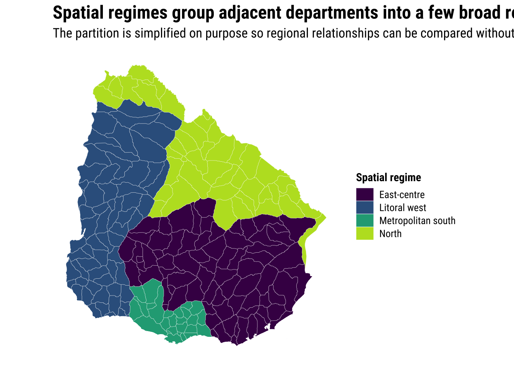
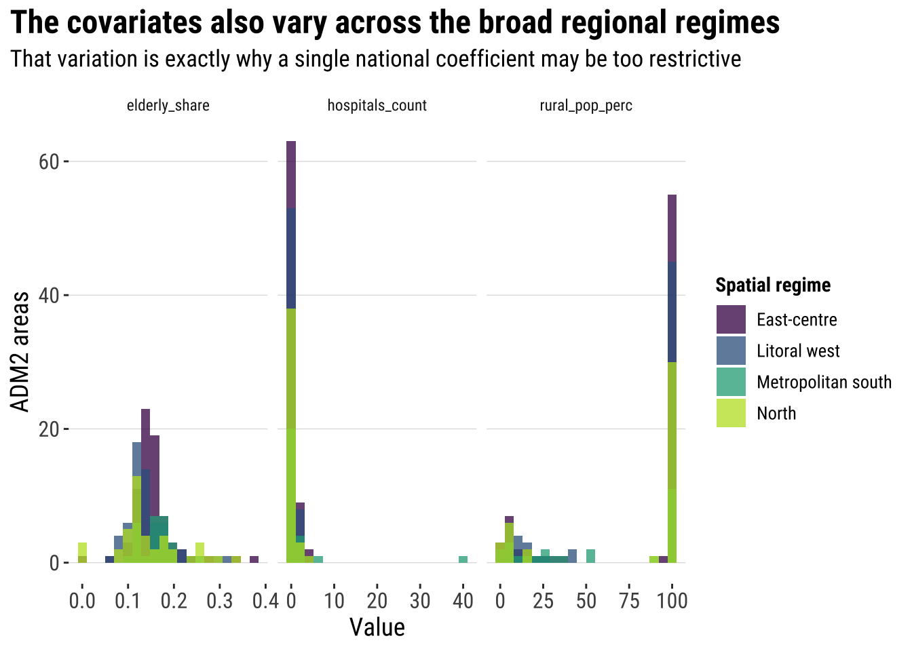
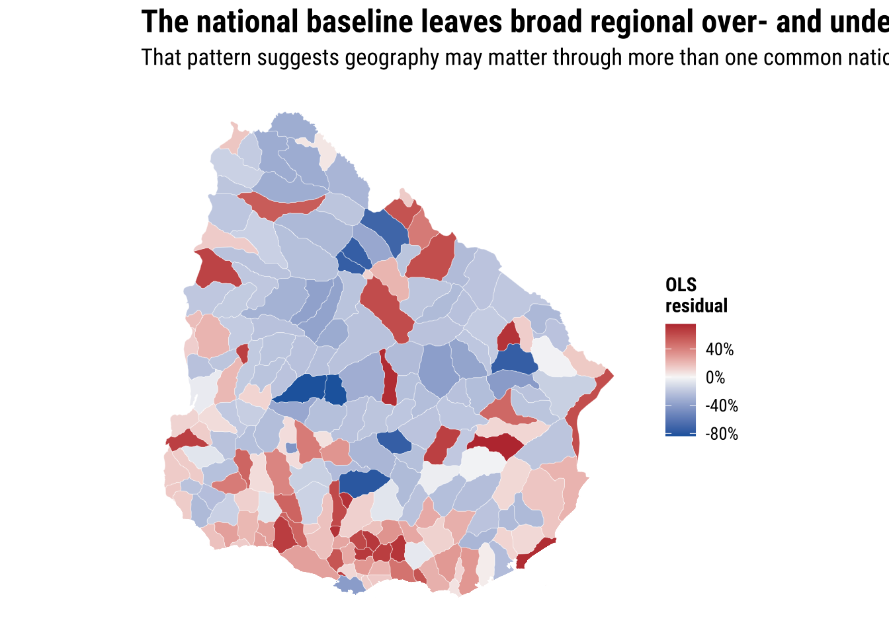
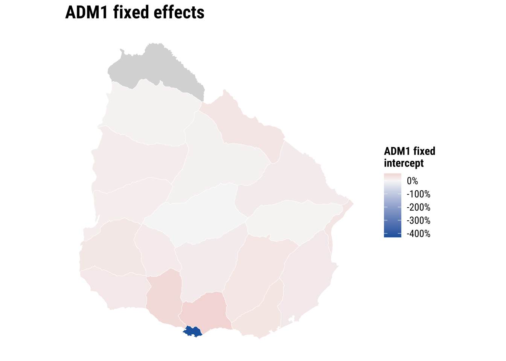
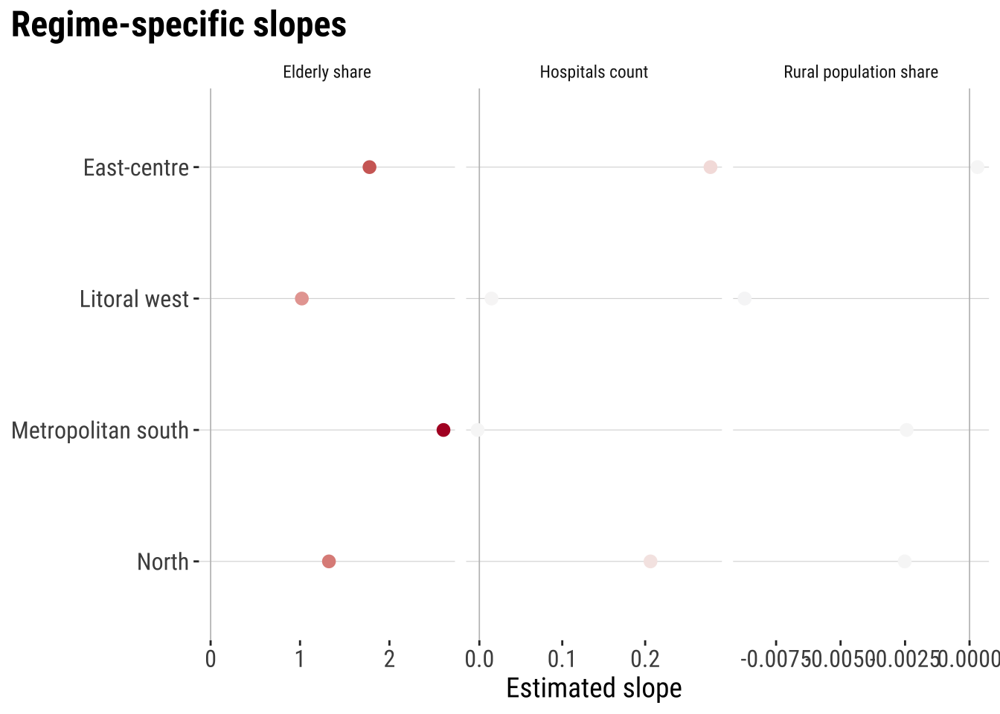
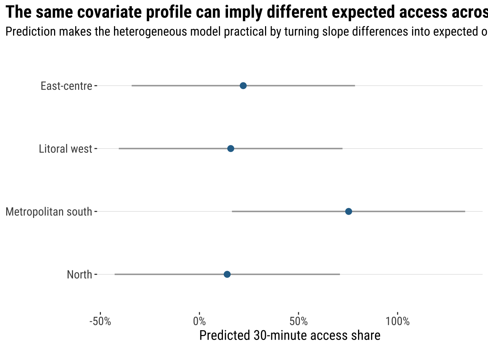

6 Spatial Heterogeneity
6.1 Introduction / context and aims
This chapter continues directly from Chapter 05 and keeps the same Uruguay risk-indicator example: the share of each ADM2 area’s wider hospital catchment that is reachable within 30 minutes. That continuity keeps the focus on a new modelling idea rather than on learning a new dataset. In the previous chapter, the main question was whether nearby areas influenced one another. Here the question shifts slightly: do the relationships themselves stay constant across space, or do they look different in different parts of the country?
This is the core intuition behind spatial heterogeneity. A single coefficient can be a useful summary, but it can also hide meaningful regional differences. The aim in this chapter is to keep the same descriptive and baseline workflow as before, then extend the analysis in two practical directions: spatial fixed effects, which let intercepts vary across departments, and spatial regimes, which let the covariate relationships vary across broader regional groupings.
6.2 Dependencies
6.3 Data description
The data source is the same as in Chapter 05 so the focus can remain on the new modelling idea rather than on learning a new dataset. We combine the Uruguay ADM2 boundary file with four tables from the risk-indicator data family:
-
URY_ADM2_access.csvfor the ingredients used to constructhospital_access_30min_share -
URY_ADM2_rural_population.csvforrural_pop_perc -
URY_ADM2_facilities.csvforhospitals_count -
URY_ADM2_demographics.csvfor theelderlycount used to constructelderly_share
The unit of analysis remains the ADM2 area. We are modelling differences between areas, and then asking whether those area-level relationships look similar across the whole country or whether they shift across regional contexts.
# Read the ADM2 boundary layer used for joins and later mapping
adm2_boundaries <- st_read(
"data/boundaries/ury_adm_2020_shp/ury_admbnda_adm2_2020.shp",
quiet = TRUE
) |>
st_make_valid()
# Read the same indicator tables used in the spatial dependence chapter
access_tbl <- read_csv(
"data/risk-assessment-indicators/URY_ADM2_access.csv",
show_col_types = FALSE
)
rural_tbl <- read_csv(
"data/risk-assessment-indicators/URY_ADM2_rural_population.csv",
show_col_types = FALSE
)
facilities_tbl <- read_csv(
"data/risk-assessment-indicators/URY_ADM2_facilities.csv",
show_col_types = FALSE
)
demographics_tbl <- read_csv(
"data/risk-assessment-indicators/URY_ADM2_demographics.csv",
show_col_types = FALSE
)# Summarise the main files and variables before joining them
data_snapshot <- tibble(
dataset = c(
"ADM2 boundaries",
"Hospital access indicators",
"Rural population indicators",
"Facility counts",
"Demographic indicators"
),
rows = c(
nrow(adm2_boundaries),
nrow(access_tbl),
nrow(rural_tbl),
nrow(facilities_tbl),
nrow(demographics_tbl)
),
key_variable = c(
"ADM2_PCODE",
"hospital_access_30min_share",
"rural_pop_perc",
"hospitals_count",
"elderly"
)
)
data_snapshot# A tibble: 5 × 3
dataset rows key_variable
<chr> <int> <chr>
1 ADM2 boundaries 204 ADM2_PCODE
2 Hospital access indicators 204 hospital_access_30min_share
3 Rural population indicators 204 rural_pop_perc
4 Facility counts 204 hospitals_count
5 Demographic indicators 204 elderly All tables use the same key, ADM2_PCODE, so the practical join structure is straightforward. As in Chapter 05, elderly_share is not supplied directly and therefore has to be constructed before modelling.
6.4 Data wrangling
The wrangling step closely reuses Chapter 05. We keep the same share outcome and the same covariates so the story continues directly, then add one new piece for this chapter: a small set of broad regional regimes. Those regimes are not meant to be the only possible partition of Uruguay. They are a teaching device that lets us test whether the same covariates behave differently across larger, contiguous parts of the country.
# Join the requested indicators into one ADM2-level modelling table
risk_indicators <- access_tbl |>
select(
ADM2_PCODE,
access_pop_education_20km,
access_pop_hospitals_30min,
access_pop_hospitals_2h
) |>
left_join(
rural_tbl |>
select(ADM2_PCODE, rural_pop_perc),
by = "ADM2_PCODE"
) |>
left_join(
facilities_tbl |>
select(ADM2_PCODE, hospitals_count),
by = "ADM2_PCODE"
) |>
left_join(
demographics_tbl |>
select(ADM2_PCODE, elderly, female_pop, pop_u15),
by = "ADM2_PCODE"
) |>
mutate(
# Build the same share outcome used in Chapter 05
hospital_access_30min_share = access_pop_hospitals_30min / pmax(access_pop_hospitals_2h, 1),
# Build a conservative population proxy from the counts available in the source bundle
population_proxy = pmax(
female_pop,
elderly,
pop_u15,
access_pop_hospitals_2h,
access_pop_education_20km,
na.rm = TRUE
),
# Convert the elderly count into the requested share variable
elderly_share = elderly / pmax(population_proxy, 1)
)
# Attach the indicators to the ADM2 geometries and create broad spatial regimes
adm2_risk <- adm2_boundaries |>
select(ADM1_ES, ADM1_PCODE, ADM2_ES, ADM2_PCODE, geometry) |>
left_join(risk_indicators, by = "ADM2_PCODE") |>
mutate(
hospital_access_30min_share = as.numeric(hospital_access_30min_share),
rural_pop_perc = as.numeric(rural_pop_perc),
hospitals_count = as.numeric(hospitals_count),
elderly_share = as.numeric(elderly_share)
) |>
filter(
!is.na(hospital_access_30min_share),
!is.na(rural_pop_perc),
!is.na(hospitals_count),
!is.na(elderly_share)
) |>
mutate(
# Group adjacent departments into a small number of interpretable regimes
regime_4 = case_when(
ADM1_ES %in% c("Montevideo", "Canelones", "San José") ~ "Metropolitan south",
ADM1_ES %in% c("Colonia", "Soriano", "Río Negro", "Paysandú", "Salto") ~ "Litoral west",
ADM1_ES %in% c("Artigas", "Rivera", "Tacuarembó", "Cerro Largo") ~ "North",
TRUE ~ "East-centre"
),
regime_4 = factor(
regime_4,
levels = c("East-centre", "Litoral west", "Metropolitan south", "North")
)
)# Check the ranges of the outcome and covariates before modelling
variable_summary <- adm2_risk |>
st_drop_geometry() |>
summarise(
across(
c(hospital_access_30min_share, rural_pop_perc, elderly_share, hospitals_count),
list(min = min, median = median, mean = mean, max = max),
na.rm = TRUE
)
) |>
pivot_longer(
everything(),
names_to = c("variable", ".value"),
names_sep = "_(?=[^_]+$)"
) |>
mutate(across(c(min, median, mean, max), round, 3))
variable_summary# A tibble: 4 × 5
variable min median mean max
<chr> <dbl> <dbl> <dbl> <dbl>
1 hospital_access_30min_share 0 0.16 0.412 1
2 rural_pop_perc 0 100 74.5 100
3 elderly_share 0 0.142 0.149 0.375
4 hospitals_count 0 0 0.647 40 # Summarise the regime design that will be used later in the chapter
regime_summary <- adm2_risk |>
st_drop_geometry() |>
group_by(regime_4) |>
summarise(
adm2_areas = n(),
departments = n_distinct(ADM1_ES),
mean_access_share = round(mean(hospital_access_30min_share), 3),
.groups = "drop"
)
regime_summary# A tibble: 4 × 4
regime_4 adm2_areas departments mean_access_share
<fct> <int> <int> <dbl>
1 East-centre 74 7 0.353
2 Litoral west 62 5 0.377
3 Metropolitan south 26 3 0.891
4 North 42 4 0.27 The modelling table is now ready. It contains the same core variables as Chapter 05, plus a practical regional grouping for the regimes exercise. That lets us compare three increasingly flexible stories: one national relationship, one national relationship with department intercept shifts, and one set of relationships that can vary across broader regions.
6.5 Data exploration
We start in the same way as the previous chapter: by looking at the outcome itself. The first question is descriptive rather than causal. Is fast hospital access spread fairly evenly across ADM2 areas, or does the share still vary systematically across the country?
plot_access_distribution <- adm2_risk |>
st_drop_geometry() |>
ggplot(aes(x = hospital_access_30min_share)) +
# Show the overall frequency pattern of the share outcome
geom_histogram(
aes(y = after_stat(density)),
bins = 30,
fill = "grey85",
colour = "white",
linewidth = 0.2
) +
# Add a kernel density line to highlight the same distribution more smoothly
geom_density(fill = "#2A6F97", alpha = 0.45, colour = "#2A6F97", linewidth = 0.5) +
scale_x_continuous(labels = label_percent(accuracy = 1)) +
labs(
title = "Fast hospital access still varies markedly across ADM2 areas",
subtitle = "The outcome now measures the share of each area's wider two-hour hospital catchment that is reachable within 30 minutes",
x = "Share of the two-hour hospital catchment reachable within 30 minutes",
y = "Density"
) +
theme_plot_course()
print(plot_access_distribution)
The distribution is much more interpretable than the raw count outcome because it no longer turns chapter-wide differences into a simple map of urban concentration. It now asks whether areas convert broader hospital reach into genuinely fast access, and that is exactly the kind of question that can plausibly vary across space.
map_access_outcome <- ggplot(adm2_risk) +
# Fill each ADM2 polygon by the fast-access share outcome
geom_sf(aes(fill = hospital_access_30min_share), colour = "white", linewidth = 0.08) +
scale_fill_course_seq_c(
name = "30-min\nshare",
labels = label_percent(accuracy = 1)
) +
labs(
title = "The mapped outcome suggests broad regional structure as well as local variation",
subtitle = "Some parts of the country convert their wider hospital catchment into short travel times much more effectively than others"
) +
theme_map_course()
print(map_access_outcome)
That pattern motivates the heterogeneity question. If the highest and lowest values are not evenly distributed, it is plausible that the same covariates do not operate identically everywhere. A quick look at the regimes we defined makes that practical intuition more concrete.
map_regimes <- ggplot(adm2_risk) +
# Show the broad regional partition used for the regimes model
geom_sf(aes(fill = regime_4), colour = "white", linewidth = 0.08) +
scale_fill_viridis_d(name = "Spatial regime", option = "D", end = 0.9) +
labs(
title = "Spatial regimes group adjacent departments into a few broad regional contexts",
subtitle = "The partition is simplified on purpose so regional relationships can be compared without an overwhelming number of coefficients"
) +
theme_map_course()
print(map_regimes)
plot_covariates <- adm2_risk |>
st_drop_geometry() |>
select(regime_4, rural_pop_perc, elderly_share, hospitals_count) |>
pivot_longer(
cols = c(rural_pop_perc, elderly_share, hospitals_count),
names_to = "variable",
values_to = "value"
) |>
ggplot(aes(x = value, fill = regime_4)) +
# Compare covariate distributions across the broad regional groupings
geom_histogram(bins = 20, alpha = 0.75, position = "identity") +
facet_wrap(~variable, scales = "free_x") +
scale_fill_viridis_d(name = "Spatial regime", option = "D", end = 0.9) +
labs(
title = "The covariates also vary across the broad regional regimes",
subtitle = "That variation is exactly why a single national coefficient may be too restrictive",
x = "Value",
y = "ADM2 areas"
) +
theme_plot_course()
print(plot_covariates)
The covariates do not overlap perfectly across regimes. That does not prove heterogeneous effects by itself, but it gives us a strong substantive reason to test for them.
6.6 Baseline modelling
We again begin with a standard linear regression. This keeps the workflow familiar and gives us a direct comparison with Chapter 05. If we estimate one national model with one coefficient per covariate, what do we conclude before adding any regional flexibility?
# Fit the shared baseline model before moving to heterogeneous relationships
ols_model <- lm(
hospital_access_30min_share ~ rural_pop_perc + elderly_share + hospitals_count,
data = adm2_risk |> st_drop_geometry()
)
# Tidy the coefficients into a compact teaching table
ols_coefficients <- tidy(ols_model, conf.int = TRUE) |>
mutate(
across(c(estimate, conf.low, conf.high), round, 3),
p.value = round(p.value, 4)
)
ols_coefficients# A tibble: 4 × 7
term estimate std.error statistic p.value conf.low conf.high
<chr> <dbl> <dbl> <dbl> <dbl> <dbl> <dbl>
1 (Intercept) 0.75 0.0844 8.88 0 0.583 0.916
2 rural_pop_perc -0.006 0.000682 -9.40 0 -0.008 -0.005
3 elderly_share 0.884 0.483 1.83 0.0688 -0.069 1.84
4 hospitals_count 0.013 0.00910 1.41 0.161 -0.005 0.031# Add fitted values and residuals back to the spatial layer for diagnostics
adm2_risk <- adm2_risk |>
mutate(
ols_fitted = fitted(ols_model),
ols_residual = resid(ols_model)
)
baseline_fit_summary <- glance(ols_model) |>
transmute(
r_squared = round(r.squared, 3),
adj_r_squared = round(adj.r.squared, 3),
sigma = round(sigma, 3),
aic = round(AIC(ols_model), 1)
)
baseline_fit_summary# A tibble: 1 × 4
r_squared adj_r_squared sigma aic
<dbl> <dbl> <dbl> <dbl>
1 0.362 0.353 0.357 165.The baseline model still gives a useful national summary. But a heterogeneity chapter asks whether that summary is masking place-specific differences. One quick way to see the problem is to map the OLS residuals. If broad regional blocks are consistently over- or under-predicted, then a constant-intercept, constant-slope model may be too rigid.
plot_ols_residuals <- ggplot(adm2_risk) +
# Map residuals to see where the national model fits poorly
geom_sf(aes(fill = ols_residual), colour = "white", linewidth = 0.08) +
scale_fill_course_div_c(
name = "OLS\nresidual",
labels = label_percent(accuracy = 1)
) +
labs(
title = "The national baseline leaves broad regional over- and under-prediction",
subtitle = "That pattern suggests geography may matter through more than one common national relationship"
) +
theme_map_course()
print(plot_ols_residuals)
6.7 Spatial fixed effects and spatial regimes
This final section introduces two complementary ways to handle spatial heterogeneity. The first, spatial fixed effects, keeps the slopes constant but allows each department to have its own intercept. The second, spatial regimes, goes further by allowing the relationships between the covariates and the outcome to vary across broader regional groupings.
6.7.1 Statistical inference and interpretation
6.7.1.1 Spatial fixed effects
An ADM1 fixed-effects model is a practical first step because it soaks up persistent department-level differences that are hard to measure directly. In plain language, it asks: after controlling for rurality, age structure, and hospital count, do some departments still sit systematically above or below the national intercept?
# Let each ADM1 department have its own intercept while keeping common slopes
fe_model <- lm(
hospital_access_30min_share ~ rural_pop_perc + elderly_share + hospitals_count + ADM1_ES,
data = adm2_risk |> st_drop_geometry()
)
# Keep the non-fixed-effect coefficients in a short comparison table
fe_main_coefficients <- tidy(fe_model, conf.int = TRUE) |>
filter(!str_detect(term, "^ADM1_ES")) |>
mutate(
across(c(estimate, conf.low, conf.high), round, 3),
p.value = round(p.value, 4)
)
fe_main_coefficients# A tibble: 4 × 7
term estimate std.error statistic p.value conf.low conf.high
<chr> <dbl> <dbl> <dbl> <dbl> <dbl> <dbl>
1 (Intercept) 0.357 0.151 2.36 0.0192 0.059 0.655
2 rural_pop_perc -0.003 0.000784 -4.44 0 -0.005 -0.002
3 elderly_share 0.364 0.454 0.801 0.424 -0.532 1.26
4 hospitals_count 0.14 0.0296 4.71 0 0.081 0.198# Reconstruct the department-specific intercept adjustments for mapping
reference_adm1 <- levels(model.frame(fe_model)$ADM1_ES)[1]
adm1_effects <- tidy(fe_model) |>
filter(str_detect(term, "^ADM1_ES")) |>
transmute(
ADM1_ES = str_remove(term, "^ADM1_ES"),
fixed_effect = estimate
) |>
bind_rows(
tibble(ADM1_ES = reference_adm1, fixed_effect = 0)
)
adm1_effect_map <- adm2_risk |>
select(ADM1_ES, geometry) |>
left_join(adm1_effects, by = "ADM1_ES") |>
group_by(ADM1_ES) |>
summarise(fixed_effect = first(fixed_effect))map_fixed_effects <- ggplot(adm1_effect_map) +
# Map the department-level intercept shifts implied by the fixed-effects model
geom_sf(aes(fill = fixed_effect), colour = "white", linewidth = 0.15) +
scale_fill_course_div_c(
name = "ADM1 fixed\nintercept",
labels = label_percent(accuracy = 1)
) +
labs(
title = "Spatial fixed effects absorb persistent department-level differences",
subtitle = "Positive values indicate departments that sit above the reference intercept after controlling for the covariates"
) +
theme_map_course()
print(map_fixed_effects)
The fixed-effects model is useful because it recognises that departments can differ for reasons not fully captured by our three observed covariates. The trade-off is that the model still assumes that the slopes for rurality, age structure, and hospitals count are the same everywhere.
# Summarise the main fixed-effects coefficients for interpretation
fe_inference_summary <- tidy(fe_model, conf.int = TRUE) |>
filter(!str_detect(term, "^ADM1_ES")) |>
transmute(
term,
estimate = round(estimate, 3),
conf_low = round(conf.low, 3),
conf_high = round(conf.high, 3),
p_value = round(p.value, 4)
)
fe_inference_summary# A tibble: 4 × 5
term estimate conf_low conf_high p_value
<chr> <dbl> <dbl> <dbl> <dbl>
1 (Intercept) 0.357 0.059 0.655 0.0192
2 rural_pop_perc -0.003 -0.005 -0.002 0
3 elderly_share 0.364 -0.532 1.26 0.424
4 hospitals_count 0.14 0.081 0.198 0 6.7.1.2 Spatial regimes
Spatial regimes relax that constant-slope assumption. Instead of only allowing intercepts to differ, we let the covariate relationships vary across a small number of broad regional contexts. Here we use four contiguous regimes so the model stays interpretable and the coefficient count stays manageable for an introductory course.
# Allow the covariate relationships to vary across the four broad regimes
regime_model <- lm(
hospital_access_30min_share ~ regime_4 * (rural_pop_perc + elderly_share + hospitals_count),
data = adm2_risk |> st_drop_geometry()
)
# Compare overall fit across the three model stages
model_fit_compare <- tibble(
model = c("OLS", "ADM1 fixed effects", "Spatial regimes"),
adj_r_squared = c(
summary(ols_model)$adj.r.squared,
summary(fe_model)$adj.r.squared,
summary(regime_model)$adj.r.squared
),
aic = c(
AIC(ols_model),
AIC(fe_model),
AIC(regime_model)
)
) |>
mutate(
adj_r_squared = round(adj_r_squared, 3),
aic = round(aic, 1)
)
model_fit_compare# A tibble: 3 × 3
model adj_r_squared aic
<chr> <dbl> <dbl>
1 OLS 0.353 165.
2 ADM1 fixed effects 0.519 121.
3 Spatial regimes 0.594 81.3# Translate the interaction model into regime-specific slopes for each covariate
get_regime_slope <- function(regime_name, variable_name) {
interaction_name <- paste0("regime_4", regime_name, ":", variable_name)
interaction_effect <- if (interaction_name %in% names(coef(regime_model))) {
coef(regime_model)[[interaction_name]]
} else {
0
}
coef(regime_model)[[variable_name]] + interaction_effect
}
regime_slopes <- crossing(
regime_4 = levels(adm2_risk$regime_4),
variable = c("rural_pop_perc", "elderly_share", "hospitals_count")
) |>
mutate(
estimate = map2_dbl(regime_4, variable, get_regime_slope),
variable = recode(
variable,
rural_pop_perc = "Rural population share",
elderly_share = "Elderly share",
hospitals_count = "Hospitals count"
)
)
regime_slopes |>
mutate(estimate = round(estimate, 3))# A tibble: 12 × 3
regime_4 variable estimate
<chr> <chr> <dbl>
1 East-centre Elderly share -0.123
2 East-centre Hospitals count 0.314
3 East-centre Rural population share 0
4 Litoral west Elderly share 0.12
5 Litoral west Hospitals count 0.017
6 Litoral west Rural population share -0.009
7 Metropolitan south Elderly share 1.19
8 Metropolitan south Hospitals count -0.002
9 Metropolitan south Rural population share -0.003
10 North Elderly share -0.311
11 North Hospitals count 0.253
12 North Rural population share -0.002plot_regime_slopes <- ggplot(
regime_slopes,
aes(x = estimate, y = fct_rev(regime_4), colour = estimate)
) +
# Draw a zero line so positive and negative slopes are easier to compare
geom_vline(xintercept = 0, colour = "grey75", linewidth = 0.3) +
geom_point(size = 2.6) +
facet_wrap(~variable, scales = "free_x") +
scale_colour_course_div_c(name = "Slope") +
labs(
title = "Spatial regimes show that the covariate relationships are not constant everywhere",
subtitle = "The same predictor can have a different estimated slope depending on the regional context",
x = "Estimated slope",
y = NULL
) +
theme_plot_course() +
theme(legend.position = "none")
print(plot_regime_slopes)
This is the key substantive payoff of the chapter. The regimes model says that one national coefficient may be too simple. In one part of the country, the local hospital stock may be much more strongly associated with fast access than in another. Rurality may also matter differently across regions. For social-science applications, that is often the most useful lesson: the direction and size of an association can depend on where it is being estimated.
# Extract the interaction terms so the heterogeneity evidence is easy to inspect
regime_inference_summary <- tidy(regime_model, conf.int = TRUE) |>
filter(str_detect(term, "^regime_4.*:")) |>
transmute(
term,
estimate = round(estimate, 3),
conf_low = round(conf.low, 3),
conf_high = round(conf.high, 3),
p_value = round(p.value, 4)
)
regime_inference_summary# A tibble: 9 × 5
term estimate conf_low conf_high p_value
<chr> <dbl> <dbl> <dbl> <dbl>
1 regime_4Litoral west:rural_pop_perc -0.009 -0.013 -0.005 0
2 regime_4Metropolitan south:rural_pop_perc -0.003 -0.007 0.001 0.131
3 regime_4North:rural_pop_perc -0.002 -0.006 0.002 0.371
4 regime_4Litoral west:elderly_share 0.242 -1.77 2.26 0.813
5 regime_4Metropolitan south:elderly_share 1.31 -2.36 4.99 0.481
6 regime_4North:elderly_share -0.188 -2.16 1.78 0.851
7 regime_4Litoral west:hospitals_count -0.297 -0.458 -0.137 0.0003
8 regime_4Metropolitan south:hospitals_count -0.316 -0.411 -0.22 0
9 regime_4North:hospitals_count -0.061 -0.216 0.094 0.439 6.7.2 Model assessment
Once we have fitted the three models, we should compare whether the extra spatial flexibility actually improves fit. For teaching purposes, it helps to look at more than one metric. Adjusted R-squared gives a familiar summary of explained variation, AIC penalises unnecessary complexity, and RMSE or MAE show prediction error in the outcome’s own units.
# Compare fit and error across the baseline and heterogeneous models
model_assessment <- tibble(
model = c("OLS", "ADM1 fixed effects", "Spatial regimes"),
rmse = c(
sqrt(mean(resid(ols_model)^2)),
sqrt(mean(resid(fe_model)^2)),
sqrt(mean(resid(regime_model)^2))
),
mae = c(
mean(abs(resid(ols_model))),
mean(abs(resid(fe_model))),
mean(abs(resid(regime_model)))
),
adj_r_squared = c(
summary(ols_model)$adj.r.squared,
summary(fe_model)$adj.r.squared,
summary(regime_model)$adj.r.squared
),
aic = c(
AIC(ols_model),
AIC(fe_model),
AIC(regime_model)
)
) |>
mutate(
rmse = round(rmse, 3),
mae = round(mae, 3),
adj_r_squared = round(adj_r_squared, 3),
aic = round(aic, 1)
)
model_assessment# A tibble: 3 × 5
model rmse mae adj_r_squared aic
<chr> <dbl> <dbl> <dbl> <dbl>
1 OLS 0.354 0.294 0.353 165.
2 ADM1 fixed effects 0.291 0.229 0.519 121.
3 Spatial regimes 0.272 0.209 0.594 81.3The comparison is informative rather than mechanical. Adjusted R2 summarises explained variation, AIC tells us whether that improvement is worth the added complexity, and RMSE and MAE keep the assessment in the outcome’s own units. The fixed-effects model often captures important baseline structure, while the regimes model adds a different kind of value: it shows where relationships vary rather than only where average levels differ.
6.7.3 Model prediction
Prediction is a useful final step because it turns the fitted model into something that can be used directly. With a regimes model, prediction is straightforward: provide a new observation with the covariates and the regime label, then ask the model for the fitted outcome or a prediction interval.
# Build a simple prediction scenario using typical covariate values
prediction_scenarios <- adm2_risk |>
st_drop_geometry() |>
summarise(
rural_pop_perc = median(rural_pop_perc),
elderly_share = median(elderly_share),
hospitals_count = median(hospitals_count)
) |>
crossing(regime_4 = levels(adm2_risk$regime_4))
# Generate fitted values and prediction intervals from the regimes model
regime_predictions <- bind_cols(
prediction_scenarios,
as_tibble(
predict(
regime_model,
newdata = prediction_scenarios,
interval = "prediction"
)
)
) |>
rename(
predicted_share = fit,
lower_80 = lwr,
upper_80 = upr
) |>
mutate(across(c(predicted_share, lower_80, upper_80), round, 3))
regime_predictions# A tibble: 4 × 7
rural_pop_perc elderly_share hospitals_count regime_4 predicted_share lower_80
<dbl> <dbl> <dbl> <chr> <dbl> <dbl>
1 100 0.142 0 East-ce… 0.221 -0.342
2 100 0.142 0 Litoral… 0.158 -0.407
3 100 0.142 0 Metropo… 0.753 0.164
4 100 0.142 0 North 0.14 -0.428
# ℹ 1 more variable: upper_80 <dbl>plot_regime_predictions <- ggplot(
regime_predictions,
aes(x = predicted_share, y = fct_rev(regime_4))
) +
# Show the fitted value and its uncertainty for the same covariate profile
geom_segment(
aes(x = lower_80, xend = upper_80, yend = fct_rev(regime_4)),
colour = "grey65",
linewidth = 0.7
) +
geom_point(colour = "#2A6F97", size = 2.7) +
scale_x_continuous(labels = label_percent(accuracy = 1)) +
labs(
title = "The same covariate profile can imply different expected access across regimes",
subtitle = "Prediction makes the heterogeneous model practical by turning slope differences into expected outcomes",
x = "Predicted 30-minute access share",
y = NULL
) +
theme_plot_course()
print(plot_regime_predictions)
This prediction exercise is deliberately simple, but it makes the chapter’s lesson concrete. If two places have the same broad covariate profile but belong to different spatial regimes, the expected outcome need not be the same. That is exactly what a heterogeneous model is designed to capture.
6.7.4 What changed, assumptions, and remaining gaps
This chapter now aligns directly with the revised Chapter 05. It keeps the same share-based hospital-access outcome and the same covariates, starts with the required kernel histogram, fits the standard OLS baseline, and then extends the analysis into ADM1 spatial fixed effects and four-region spatial regimes. It also uses the shared plotting style from style/data-visualisation_theme.R throughout rather than defining local plotting helpers.
The main assumption is unchanged from Chapter 05: elderly_share is derived because the source bundle provides elderly as a count rather than as a ready-made share. The chapter therefore constructs a conservative population proxy from the available count variables and makes that step explicit in both code and text. A second assumption is the four-regime partition itself. That grouping is designed to be contiguous and interpretable for teaching purposes, not to claim that there is one uniquely correct regionalisation of Uruguay.
The main remaining gap is that the outcome is still a relative accessibility share within the observed hospital-access system rather than a full share of total population. If a better denominator becomes available later, both Chapters 05 and 06 could be updated again so the accessibility outcome and elderly_share are anchored to a clearer population base.